Начало движения
ПДД 8.1
ПДД 8.1
ПДД 8.5
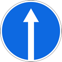
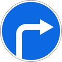
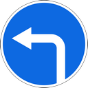
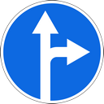
ПДД 8.5, 8.8, 8.11, 8.12, 16.1, 16.3
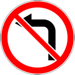
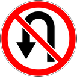
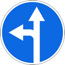
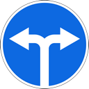
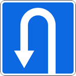
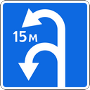
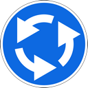
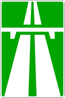
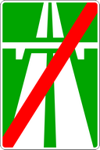
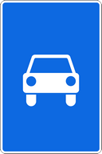


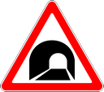


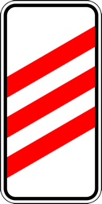
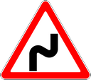
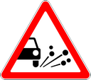
Сплошные линии 1.1–1.3 — см. «Сплошная линия».
По п. 8.5 перед разворотом нужно заблаговременно занять крайнее левое положение (крайнюю левую полосу). На дороге с односторонним движением (знаки 5.5, 5.6) — крайнее левое положение по ходу движения.
Разворот запрещён с правой полосы, даже если там знаком 4.1.3 или 4.1.5 разрешён только поворот направо: знак задаёт направление по полосе, но не отменяет п. 8.5.
Исключение (п. 8.5, последний абзац; уточнение в п. 8.8): вне перекрёстка, если ширины не хватает для разворота слева, манёвр допускается от правого края проезжей части или с правой обочины — с уступлением дороги попутным и встречным транспортным средствам.
По п. 8.8 при развороте вне перекрёстка уступают дорогу встречным транспортным средствам и трамваю попутного направления.
При трамвайных путях слева на одном уровне с проезжей частью поворот налево и разворот выполняют с трамвайных путей, если знаками 5.15.1, 5.15.2 или разметкой 1.18 не предписан иной порядок; помех трамваю быть не должно.
Знак 3.19 «Разворот запрещён» дублирует запрет на участке дороги. Знак 1.31 предупреждает о тоннеле впереди; сам запрет следует из п. 8.11.
На автомагистрали (5.1, конец — 5.2) по п. 16.1 запрещены разворот и въезд в технологические разрывы разделительной полосы, а также движение задним ходом.
Те же требования по п. 16.3 распространяются на дорогу для автомобилей (знак 5.3).
ПДД 8.12
ПДД 13.9—13.12